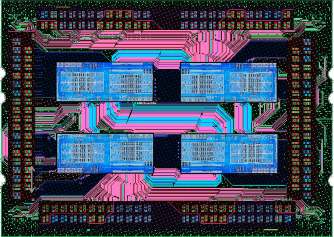
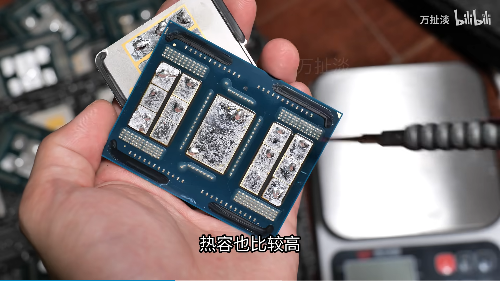
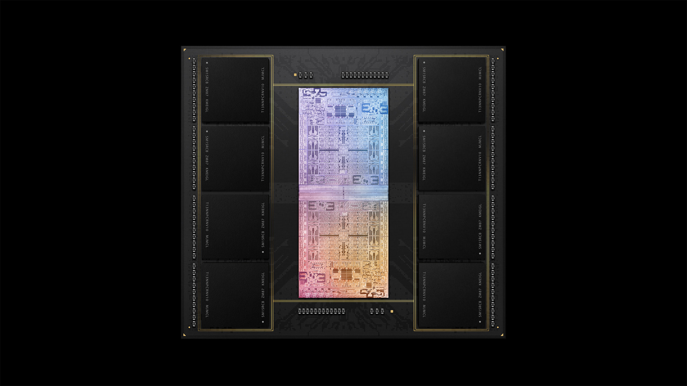
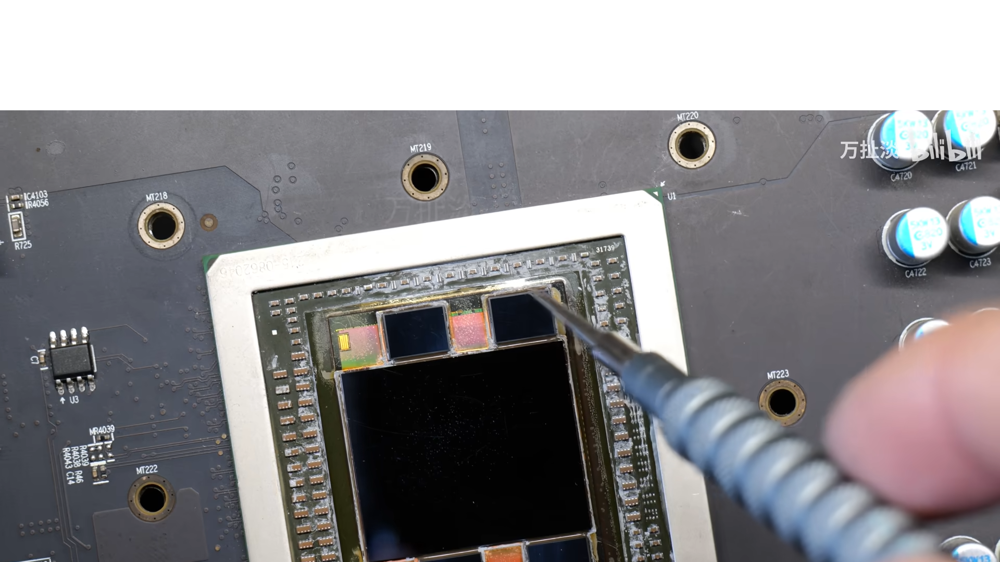
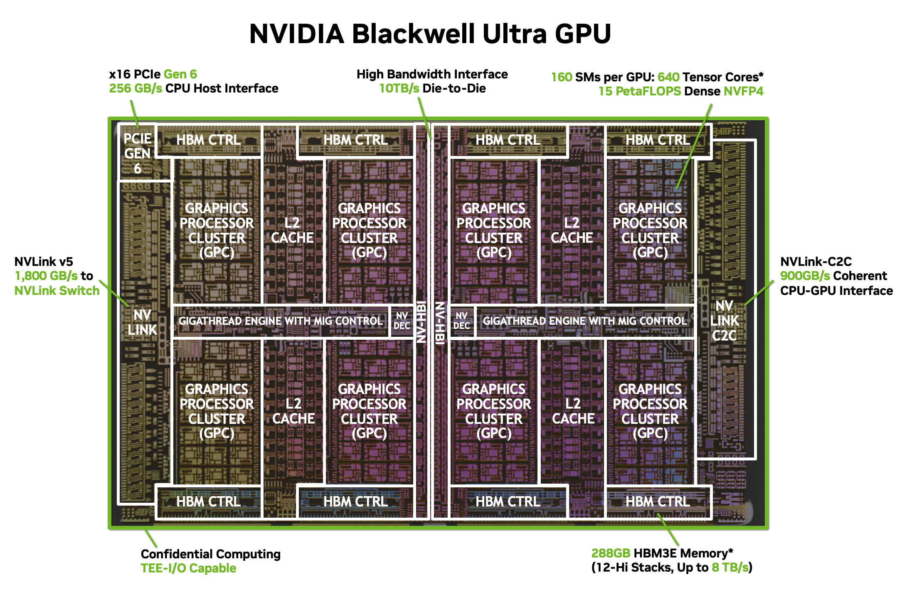
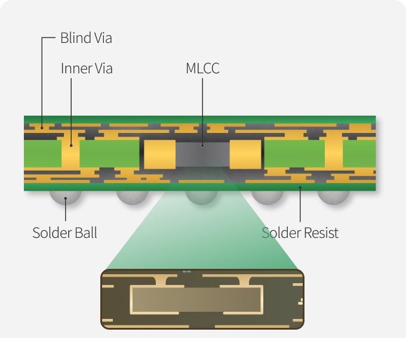

The Package is the Product

Two things leaked in the same week that I think are worth reading together.
Sources familiar with the matter say Samsung Electronics is planning a $4 billion chip packaging plant in Thái Nguyên, Vietnam, with a $2 billion first phase. Separately, industry sources in Korea report that Samsung Electro-Mechanics, the components subsidiary, is building a new production line there for something called an MLCC embedded substrate, with investment expected to run into the hundreds of billions of Korean won over two years. Vietnam's finance ministry confirmed it is working on a memorandum of understanding with Samsung on a semiconductor project, without giving details.
Neither has been officially confirmed by Samsung. But two rumors pointing at the same province at the same time, both aimed at AI hardware, is worth paying attention to, especially if you live here, which I do.
So let's walk through what this actually means.
Packaging — And No, Not the Retail Box
If you asked a random person what "chip packaging" means, they would probably picture the retail box. The cardboard. The plastic tray. The "Intel Inside" sticker. Completely reasonable interpretation of the word, and also not what anyone in the semiconductor industry means when they say it.
In chip engineering, packaging refers to the physical process of taking a bare silicon die, which fresh out of the fab is basically a fragile, unusable sliver of silicon with microscopic pads on it, and turning it into something you can actually put in a device. You encase it in a protective housing, connect those microscopic pads to larger external contacts, and mount the whole thing onto a substrate so it can interface with a circuit board.


That is the basic version. In 1995 this was genuinely just logistics. You made the chip, you wrapped it up, you shipped it.
The reason packaging became interesting, expensive, and strategically critical is that modern chips are no longer single dies that just need to be wrapped. They are multi-die assemblies where the way the dies are connected to each other and to their memory is one of the primary engineering levers for performance. How close is the memory to the compute? How wide is the data path between chiplets? How stable is the power delivery underneath all of it? These are packaging questions now, and the answers directly determine how fast and how efficiently the chip runs.
So when Samsung is rumored to be building a $4 billion chip packaging plant, they are not building a bigger box factory. They are building a facility to physically assemble next-generation multi-die AI hardware, the kind where the package itself is doing serious engineering work.
The name is terrible. The thing it describes is not boring at all.
Wait, What Are Chiplets
For most of semiconductor history, a processor was a single monolithic die. One piece of silicon with everything on it, CPU cores, cache, memory controller, IO, all of it. You made it as big as you needed it to be.
The problem is that bigger dies are exponentially harder to make. A larger die means more area exposed to defects on the wafer, which tanks your yield. At a certain size, most of what you are paying for ends up in the bin. And as designs got more complex, more cores, more cache, more specialized blocks for AI and graphics, the monolithic die approach started hitting a wall.
The industry's answer was to stop trying to put everything on one piece of silicon and instead split the design into smaller, specialized tiles called chiplets, then stitch them together in the package. Each chiplet is small enough to manufacture with good yield. Each can be made on whatever process node makes the most sense for it. Your CPU cores on the latest bleeding edge node, your IO on an older cheaper node where it runs perfectly fine. Then you assemble them together and connect them with high-density interconnects so they behave like a single chip to the software running on top.
This is now how most serious processors are built. And packaging is what makes it possible.
What Good Packaging Actually Looks Like in the Real World
AMD Ryzen and EPYC, the chiplet pioneer
AMD was the company that really made chiplets mainstream in consumer and server processors. Their Ryzen and EPYC chips split the design into CPU core chiplets called CCDs and a separate IO die that handles memory controllers, PCIe lanes, and interconnects. The CCDs get made on TSMC's latest node where compute density matters. The IO die gets made on an older node where it is cheaper and the analog circuits actually prefer it.
The result is that AMD can build a 96-core server chip without trying to manufacture a single die the size of a postage stamp. They build smaller tiles, test each one, discard the bad ones, and assemble the good ones into a package. Yield goes up. Cost per core goes down. The packaging is doing the work that would have been physically impossible on a monolithic die.
The interconnect between chiplets called Infinity Fabric runs fast enough that from the software's perspective, it mostly just looks like one chip. The seams are nearly invisible.
Apple M-series, packaging as product design
When Apple launched the M1 Ultra, they took two M1 Max dies and connected them with a high-bandwidth die-to-die interconnect called UltraFusion, then marketed the result as a single chip. The software sees one processor. The hardware is two dies talking to each other across a bridge in the package at speeds fast enough that the latency is negligible for most workloads.
This is also why the M-series memory story is interesting. The CPU, GPU, and Neural Engine all share the same physical pool of memory on the same package, connected by an extremely wide internal bus. On the M4 Pro and M5 Pro, that memory runs on tightly integrated LPDDR5X with bandwidth numbers that discrete desktop GPUs struggle to match despite having more raw VRAM. There is no discrete GPU shouting across a PCIe slot to reach its memory. Everything is on the same package, talking at close range.

The result is a machine that runs sustained creative workloads, video export, 3D rendering, local AI inference, with thermals that would embarrass a traditional laptop. That is packaging doing real engineering work, not just marketing.
AMD and HBM, an expensive lesson that became a data center play
AMD tried HBM on consumer and professional Radeon GPUs for a few generations. The Fury series in 2015, later the Vega-based Radeon Pro and Radeon VII cards. The bandwidth numbers were genuinely impressive. The cost was not. HBM is expensive to manufacture and even more expensive to package correctly, and for a consumer GPU where GDDR6 is fast enough for most workloads, the price premium was difficult to justify. AMD eventually dropped HBM from their Radeon lineup entirely. The current RX 7000 series runs on GDDR6 like everything else in the consumer space.
Where HBM survived on the AMD side is the Instinct MI series, their data center compute accelerators. The MI300X, which competes directly with Nvidia's H100 and B100, uses HBM3 stacked directly on the package. At that scale, the bandwidth is not a premium feature, it is a hard requirement. The workloads running on MI300X class hardware are so memory-hungry that GDDR6 simply cannot feed them fast enough regardless of price. HBM is the only answer that works, which is exactly why it remains the standard for AI accelerators even as it disappeared from everything else.
The Radeon story is actually a useful illustration of the cost dynamic. HBM packaging is hard enough and expensive enough that even a company with AMD's engineering capability decided it was not worth it for the consumer market. The fact that it is still the default for data center AI hardware tells you something about how uncompromising those workloads are about memory bandwidth.

Nvidia Blackwell, when the package becomes the product
Nvidia's Blackwell architecture pushed this further still. The flagship B100 connects two compute dies to each other using a high-density interconnect, then surrounds them with HBM stacks, all inside one package. The individual dies are too large to manufacture as a single piece with acceptable yield, so Nvidia cuts the design in half and stitches the halves back together in the package. The fab makes the pieces. The packaging makes the chip.

The packaging for Blackwell is handled by TSMC using their CoWoS technology, which stands for Chip on Wafer on Substrate. It is one of the most advanced packaging processes in the world and it is also one of the most constrained. TSMC has been running CoWoS at near full capacity since AI demand exploded, and customers have been routinely supply-limited not because TSMC cannot make the dies, but because TSMC does not have enough CoWoS packaging capacity to assemble them fast enough. Nvidia has publicly acknowledged this. The fab is not always the bottleneck anymore. Sometimes the packaging line is.
This is the direction everything is heading. The package is increasingly where the product gets defined, not just where the chip gets wrapped.
The Substrate Sitting Under All of This
Underneath everything, the compute chiplets, the HBM stacks, the die-to-die interconnects, there is a layer called the substrate. It is the foundation the whole assembly sits on. It routes power to every die, manages signal integrity, and handles a lot of passive electrical work keeping the operating environment stable. Not glamorous. Also increasingly the thing that determines whether a package design actually hits its performance targets.
Samsung Electro-Mechanics has been developing a substrate with MLCCs built directly inside it. An MLCC, a Multi-Layer Ceramic Capacitor, is a tiny passive component that smooths out the voltage feeding a chip so it stays stable under load. Smaller than a grain of rice, which is why the industry calls them "the rice of electronics." Funny if you are Vietnamese. Just a metaphor otherwise.
Normally these sit on the surface of a board as discrete components you can spot in a teardown. Embedding them inside the substrate puts them physically closer to the chip. That shorter distance reduces parasitic inductance, unwanted electrical resistance that degrades power delivery at high frequencies. For a multi-chiplet package this matters even more than it does for a monolithic die. You have multiple dies all drawing power simultaneously, and any instability in that shared power delivery environment hits every chiplet at once.

It also shows up in consumer devices. Your phone's SoC is doing a scaled-down version of the same thing, moving data between compute and memory as fast as possible while keeping heat and power low enough to survive inside a 8mm chassis. Substrate quality directly affects how stable that power delivery is, which affects performance under sustained load, thermals, and battery life. The difference between a phone that stays fast through a gaming session and one that gets warm and throttles is partly the chip, partly the cooling, and partly the electrical environment underneath it.
Samsung Electro-Mechanics has been supplying these embedded substrates in small quantities to select customers. The Vietnam line is about scaling that up. The fact that AI chip companies and hyperscalers were reportedly approaching them about supply before the line was even rumored publicly is a decent sign the product is working.
What Thái Nguyên Might Look Like Soon
Samsung has been in Thái Nguyên since 2013, initially for smartphone manufacturing. Samsung Electro-Mechanics already has a factory there with over $2.3 billion invested. If both rumors hold, you add a scaled-up MLCC embedded substrate line and a chip packaging facility on top of that existing base.
The industrial logic is not complicated. The substrate goes into the package. Having both in the same province shortens the supply chain and keeps more of the value-add inside Samsung's ecosystem. Samsung has spent 18 years in Vietnam building the manufacturing base and government relationships that make this kind of concentration feasible. These rumored investments are not a pivot. They are an upgrade of something already deeply established.
Vietnam also makes sense geopolitically. The country sits outside the US-China semiconductor export control blast radius. Stable trade relationships, a government actively courting high-value manufacturing, and a track record of holding up under external pressure. Last year's export numbers were strong despite a chaotic global trade environment. Samsung has invested over $23 billion here and created 90,000 jobs. Vietnam is not a peripheral node for them. It is load-bearing infrastructure.
Where This Leaves Things
To understand why the Samsung rumors matter beyond just Samsung, it helps to look at who currently owns advanced packaging and what their constraints are.
TSMC is the dominant player. Their CoWoS platform handles the packaging for most of the AI accelerators that matter right now, including Nvidia's entire Blackwell lineup. The problem is that CoWoS capacity is genuinely scarce. Building advanced packaging infrastructure requires specialized equipment, long lead times, and an enormous amount of process engineering. TSMC has been expanding, but demand has consistently outpaced their buildout. Customers with confirmed die orders have had to wait on packaging slots. For an industry where AI infrastructure spending is measured in the tens of billions per quarter, that is a real and painful constraint.
Intel is in a stranger position. They have their own advanced packaging technologies called Foveros, which stacks dies vertically with high-density connections, and EMIB, which connects dies side by side on a bridge embedded in the package. These are genuinely impressive technologies and Intel has been pitching them aggressively to external customers through their Intel Foundry Services division. The pitch is essentially: we have world-class packaging capability, come use it even if you are not fabbing your chips with us.
The problem is that Intel's foundry business has been losing money at a scale that is difficult to overstate, and the company has been restructuring aggressively. Customers considering Intel for packaging have to weigh the technology against the question of whether the business will be stable enough to support a multi-year supply relationship. That is not a comfortable calculation for anyone designing hardware that will ship in volume two or three years from now. Intel's packaging technology is real. Intel's packaging business is uncertain.
Samsung has its own advanced packaging platforms called X-Cube for vertical stacking and I-Cube for side-by-side multi-chip integration. They are technically capable. The gap versus TSMC's CoWoS has historically been in yield and process maturity rather than fundamental capability. The Vietnam investment, if the rumors hold, is partly about building the manufacturing scale to close that gap on the production side, not just in the lab.
What the industry actually needs is more than one credible advanced packaging supplier running at scale. Right now the answer to "who do you call when you need CoWoS-class packaging for a major AI chip program" is basically TSMC and then a significant drop-off. If Samsung can convert the Thai Nguyen buildout into a credible second option at scale, that changes the supply dynamic for every fabless chip company trying to plan production two years out.
And the market they are building for is not just hyperscalers buying AI accelerators. It is every device running chiplet architecture, which at this point is most serious processors. Advanced packaging is now the shared infrastructure underneath all modern high-performance hardware. The Ryzen CPUs, the Apple M5 Pro / Max , the MI300X, the Blackwell modules all depend on someone getting the substrate and the package right.
That someone is increasingly doing it in a province an hour north of Hanoi.